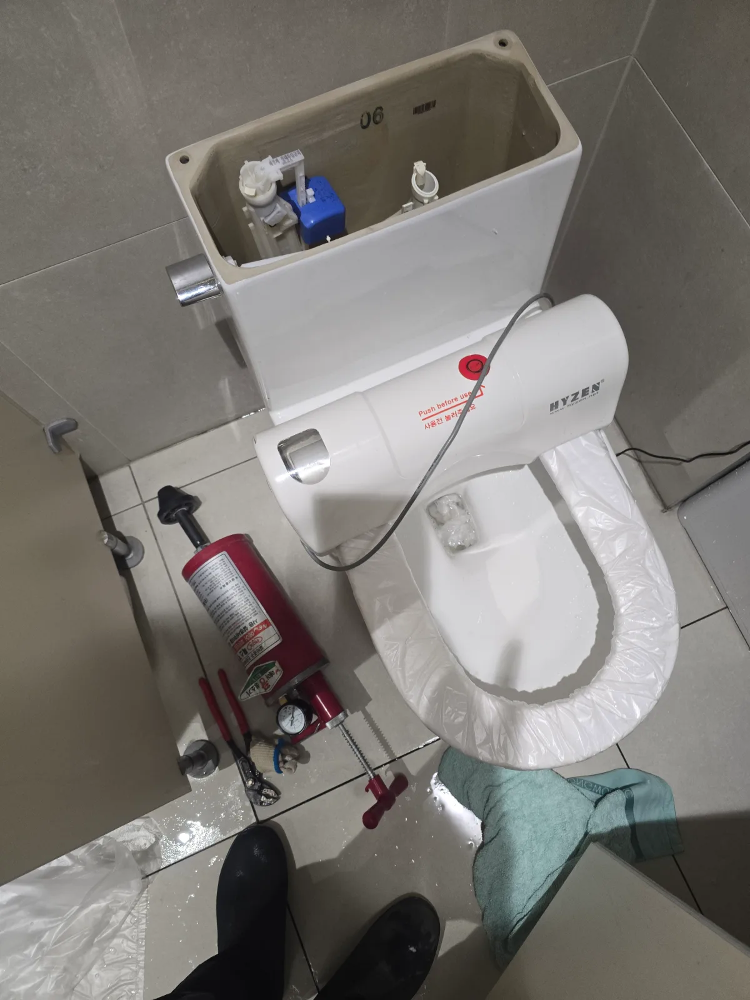

관악구 신림동 변기막힘, 현장 도착 후 진단
변기 물이 제대로 내려가지 않고 물탱크 작동도 이상하다는 요청을 접수한 뒤 변기막힘 장비와 교체용 부속을 준비해 관악구 신림동 현장으로 신속하게 이동했습니다.
현장에서 변기 물을 내려보니 오수와 물이 바로 배출되지 않고 변기 내부 수위가 먼저 올라오는 전형적인 변기막힘 증상이 나타났습니다. 반복해서 물을 내리면 넘침과 오수 역류로 이어질 수 있어 추가 사용을 중단하고 막힘 상태부터 점검했습니다.
변기막힘을 전문적으로 처리해 온 숙련 기술자가 배수 반응을 확인한 결과, 이번 현장은 즉시 변기를 탈거하기보다 에어 압력 관통작업으로 내부의 휴지와 오물 막힘을 먼저 해소할 수 있는 상태였습니다.
배수 문제와 함께 물탱크 내부도 확인했습니다. 필밸브는 수도에서 물탱크로 들어오는 물의 양과 수위를 조절하는 핵심 부속입니다. 기존 필밸브는 장기간 사용으로 작동이 불안정해져 정상적인 급수 기능을 기대하기 어려웠습니다. 막힘만 해결하면 물탱크 급수 불량이 그대로 남기 때문에 필밸브 교체까지 함께 진행하기로 했습니다.
1단계: 증상 확인과 필요한 장비 작업
먼저 변기 주변을 보양하고 변기용 에어 압력 관통기를 준비했습니다. 장비의 헤드를 변기 배수구에 밀착시킨 뒤 변기 구조와 막힘 반응을 확인하며 압력을 단계적으로 조절했습니다.
무리하게 높은 압력을 한 번에 가하면 변기 내부의 이물질이 하부 오수관으로 깊숙이 밀리거나 연결 부위에 부담이 생길 수 있습니다. 숙련 기술자가 적정 압력으로 관통작업을 반복하자 막혀 있던 휴지와 오물 덩어리가 분산되면서 물길이 열렸습니다.
관통작업 후 변기 물을 여러 차례 내려 수위 변화를 확인했습니다. 작업 전처럼 물이 차오르거나 꿀렁거리는 현상 없이 오수가 빠르게 배출됐으며, 변기 내부의 배수 기능이 정상적으로 회복된 것을 확인했습니다.

2단계: 원인 구간 처리와 정상 작동 확인
변기막힘을 해결한 뒤 물탱크 덮개를 열고 내부 급수 부속을 점검했습니다. 기존 필밸브는 정상적인 수위 조절과 급수가 어려운 상태여서 수도를 잠그고 물탱크 내부의 잔수를 제거한 다음 필밸브를 분리했습니다.
물탱크와 급수관의 연결 부위를 정리하고 변기 규격에 맞는 새 필밸브를 설치했습니다. 고정 너트와 급수호스를 정확하게 체결한 뒤 수도를 다시 열어 물탱크로 물이 들어오는 속도와 차단 시점을 조절했습니다.
필밸브는 단순히 물을 채우는 부품이 아니라 물탱크의 적정 수위를 유지해 변기가 충분한 세척수로 작동하도록 하는 장치입니다. 수위를 너무 낮게 설정하면 물 내림 힘이 부족해 변기막힘이 반복될 수 있고, 너무 높으면 불필요한 물 사용이나 지속적인 급수 소음이 발생할 수 있어 적정 수위로 세밀하게 맞췄습니다.

작업 결과와 재발 방지 안내
에어 압력 관통작업을 통해 신림동 변기막힘을 해결한 뒤 새 필밸브를 설치해 물탱크 급수 기능까지 정상화했습니다. 물탱크에 물이 설정된 수위까지 안정적으로 차오른 뒤 자동으로 차단됐으며, 여러 차례 물을 내려도 변기 수위 상승이나 역류 없이 시원하게 배출됐습니다. 필밸브와 급수호스 연결 부위에서도 물이 새지 않는 것을 확인했습니다.
변기가 막혔을 때 반복해서 물을 내리면 오수가 넘쳐 화장실 바닥까지 오염될 수 있습니다. 물이 천천히 내려가거나 수위가 평소보다 높아진다면 사용을 중단하고 막힘 상태에 맞는 전문 장비로 점검해야 합니다.
물탱크에서 물이 계속 흐르는 소리가 나거나 물이 늦게 차고, 변기 물 내림 힘이 약해졌다면 필밸브와 배수 부속의 노후 상태도 확인해야 합니다. 막힘과 물탱크 고장은 서로 다른 문제이지만 함께 발생할 경우 두 증상을 각각 정확하게 해결해야 변기를 정상적으로 사용할 수 있습니다.
신라건축설비는 관악구 신림동을 비롯한 서울 전 지역과 경기권에 신속하게 출동해 변기막힘·싱크대막힘·하수구막힘을 전문적으로 해결합니다. 단순 휴지막힘과 에어 관통작업부터 석션, 변기 탈거, 필밸브와 변기 부속 교체, 배관 내시경검사, 하부 오수관과 공용배관 작업, 배관 보수·교체 및 대형 배관공사까지 숙련 기술자와 전문 장비로 자체 대응합니다.
최종 조치: 변기 배수구에 에어 압력 관통기를 밀착해 막힌 구간을 관통하고 여러 차례 통수검사를 진행했습니다. 이후 물탱크를 개방해 노후 필밸브를 철거하고 새 필밸브로 교체한 뒤 급수 속도와 설정 수위, 물 내림 상태 및 연결부 누수 여부를 최종 확인했습니다.
현장 방문 전 확인하는 비용과 작업 범위
신라건축설비는 현장 증상과 배관 구조를 확인한 뒤 필요한 작업과 예상 비용을 안내합니다. 단순 관통으로 해결되는지, 배관내시경·석션·고압세척 또는 변기 탈거가 필요한지는 현장 상태에 따라 달라집니다. 출장비와 야간 작업비, 추가 장비 비용이 발생할 수 있는 경우 작업 전에 먼저 설명하고 동의를 받은 범위에서 진행합니다.
업체를 선택할 때 확인할 사항
무조건적인 ‘0원’ 표현보다 실제 작업 범위, 추가 비용 조건, 사용 장비와 사후 대응 기준을 확인하는 것이 중요합니다. 해결되지 않았을 때의 비용 기준과 작업 후 동일 증상 발생 시 점검 범위를 사전에 문의해두면 불필요한 분쟁을 줄일 수 있습니다.
관악구 변기막힘 자주 묻는 질문
변기를 꼭 탈거해야 하나요?
변기 물을 내리면 수위가 올라오면서 시원하게 빠지지 않았고, 물탱크 내부에서도 급수가 원활하지 않거나 물이 정상 수위까지 차오르는 데 시간이 오래 걸리는 증상이 함께 나타났습니다.처럼 증상이 나타나더라도 원인은 현장마다 다를 수 있습니다. 장비와 배관 구조를 확인한 뒤 필요한 작업 범위를 안내합니다.
작업 전 비용을 알 수 있나요?
작업 전 증상과 현장 여건을 확인해 예상 범위와 비용을 먼저 안내합니다. 변기 탈거, 장비 추가 투입 또는 공용배관 작업이 필요한 경우 고객 동의 없이 임의로 진행하지 않습니다.
같은 증상이 다시 생기면 어떻게 하나요?
완료 후 정상 작동을 함께 확인하고 작업 범위에 따른 사후 안내를 드립니다. 동일 증상이 반복되면 현장 기록을 기준으로 원인을 다시 점검합니다.
변기막힘 서울·경기 출동지역
신라건축설비는 관악구 신림동 현장을 포함해 서울 25개 구와 경기도 31개 시·군의 배관 문제를 상담합니다. 현장 거리와 기사 배정 상황에 따라 출동 가능 여부를 먼저 안내드립니다.
서울 전 지역
강남구 · 강동구 · 강북구 · 강서구 · 관악구 · 광진구 · 구로구 · 금천구 · 노원구 · 도봉구 · 동대문구 · 동작구 · 마포구 · 서대문구 · 서초구 · 성동구 · 성북구 · 송파구 · 양천구 · 영등포구 · 용산구 · 은평구 · 종로구 · 중구 · 중랑구
경기도 주요 출동지역
수원시 · 용인시 · 고양시 · 화성시 · 성남시 · 부천시 · 남양주시 · 안산시 · 평택시 · 안양시 · 시흥시 · 파주시 · 김포시 · 의정부시 · 광주시 · 하남시 · 광명시 · 군포시 · 양주시 · 오산시 · 이천시 · 안성시 · 구리시 · 의왕시 · 포천시 · 양평군 · 여주시 · 동두천시 · 과천시 · 가평군 · 연천군